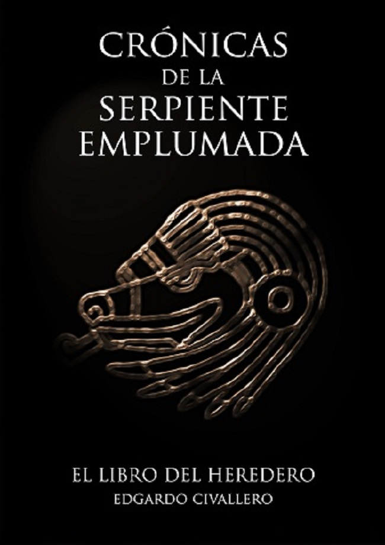

Novels and short stories
Home > Publications > Novels and short stories
I don't remember when I started writing. I do remember, yes, my first prize in a literary contest, as a teenager, and the many others that followed. I also remember the moment when I published the first volume of the Crónicas de la Serpiente Emplumada ("Chronicles of the Feathered Serpent"), with a publishing house in Barcelona that went bankrupt shortly after launching my book. And I remember that, since then, I preferred to publish on my own, in digital format, free and open.
Here are, then, some of the things I have been producing in the field of fiction.
Please note that all content is protected by copyright and distributed under a Creative Commons license (refer to the copyright and disclaimer section for details).

Crónicas de la Serpiente Emplumada (I).
El Libro del Mensajero
The Crónicas de la Serpiente Emplumada ("Chronicles of the Feathered Serpent") saga is a four-volume uchronia based on a simple plot: during his return to Castile, Christopher Columbus' two caravels are shipwrecked in the Atlantic Ocean, only a hundred miles from the Azores archipelago. The news of their discovery disappeared buried under the waters, and the men who remained at the Fort of the Nativity, in Hispaniola, with no hope of seeing the Admiral return, set out on a journey that would take them to the lands of the Tainos, the Itzaes and the Totonacs, to finally reach Tenochtitlan, the heart of the Mexica territory. Years later, on the morning of July 1, 1521, an immense fleet approaches the port of Cadiz. It carries an unknown banner with the figure of an angular serpent covered with green feathers: Quetzalcoatl. The conquest has begun.
El Libro del Mensajero ("The Book of the Messenger"), published in November 2009, is the first volume of this saga, which recounts an imaginary adventure that could have been true. It was also the only volume of the series to be published in paper format (Barcelona: Editorial El Andén). At that time, the story was only divided into three books. After the disappearance of the publishing house, the Crónicas... were reorganized into four volumes and published in digital and self-published format, with the option of buying in paper through the company Bubok. In 2021 the four volumes were revised and republished: that version is the one presented on this site, for download. There are many other versions on the Internet, retouched by third parties without the author's permission. In addition, there are still, in certain virtual platforms, paper copies belonging to the original edition of Editorial El Andén.
[Download].

Crónicas de la Serpiente Emplumada (II).
El Libro del Guerrero
The adventurers who arrived in Tenochtitlan in 1493 organized their new lives in Mexica territory. And they began their works, those that would provide the great Empire with weapons and ships. Years later, in 1521, Seville would endure the visit of those ships and the onslaught of those weapons, in one of the dramatic episodes that would mark history from then on. The first battle between the two lands.
El Libro del Guerrero ("The Book of the Warrior") (June 2010) is the second volume of the Crónicas de la Serpiente Emplumada saga, a uchronia that recounts an imaginary adventure that could have been true.
[Download].

Crónicas de la Serpiente Emplumada (III).
El Libro del Heredero
The conquests of the already powerful Mexica Empire extend from the eastern to the western sea, and from the deserts of the north to the jungles of the south. There will be no people in the Western Lands who will not feel the weight of their weapons, and who will not be forced to fight or to submit. It will be this same power, exercised for years, perfected, and multiplied, that will put the monarchs of old Europe in check. The story of the actors of events that will change the face of the planet is coming to an end. The consequences of these events, however, have only just begun.
El Libro del Heredero ("The Book of the Heir") (June 2010) is the third volume of the Crónicas de la Serpiente Emplumada saga, a uchronia that recounts an imaginary adventure that could have been true.
[Download].

Crónicas de la Serpiente Emplumada (IV).
Regreso al principio
Lost for centuries, the Crónicas de la Serpiente Emplumada are the story of the arrival of the Mexica ships and troops at the southern tip of Europe, and all that came after. When a native Castilian librarian finds the original volumes in a lost corner of the Toledo Archives, she begins an adventure that will bring her face to face with the history of her people, and with her own. Through such a journey, she will meet characters whose adventures she will have to close, and with events that, until then, had been distorted or hidden by the "Official History".
Regreso al principio ("Back to the Beginning") (January 2012) is the fourth and final volume of the Cróinicas de la Serpiente Emplumada saga, a uchronia that recounts an imaginary adventure that could have been true.
[Download].

Espíritus del viento ("Spirits of the Wind", 2012) is a journey, narrated in the first person, through the indigenous cultures of the southern cone of the Americas and, at the same time, through a life cut short and all the questions that remained unanswered... It is a story of ancient sadnesses and faded actors, but also of incomparable landscapes, deep-rooted customs and hopes still alive, in spite of everything.
I wrote the original text in 1998, after my first contacts with Argentine indigenous communities. With the passage of time (and the consequent evolution of my perspectives and opinions) I subjected it to successive revisions and rewritings, using at all times the most reliable anthropological and historical sources as reference. I added a glossary in which, initially, I collected some notes on the regional terms and indigenous words that I had been including in the narrative. Curiously, this glossary grew until it became a document of a length equivalent to that of the story itself, presenting a summarized but useful body of knowledge for those readers who are approaching the reality of the native peoples for the first time.
The novel is a literary introduction to the overwhelming cultural diversity of pre-Hispanic America, some of which is still alive, despite being little recognized or appreciated. It refers to a large number of customs, activities, and elements of the South American cone, and employs numerous words and phrases in indigenous languages. Without all of them, an adequate description of the historical and human landscape of this corner of the world would be impossible.
[Download].

El Ekeko ("The ekeko", 2010) is my approach to children's literature. The story narrates the vicissitudes of a Bolivian immigrant family in Spain, seen through the eyes of their 10-year-old daughter and the ekeko, a ceramic figurine that, in the Andes, represents a traditional home deity of good fortune. Although its content is focused on a young audience, it is also aimed at librarians, educators and other adults interested in learning ─even if only from this approach─ a small part of the South American cultural heritage in general and Bolivian in particular.
[Download].